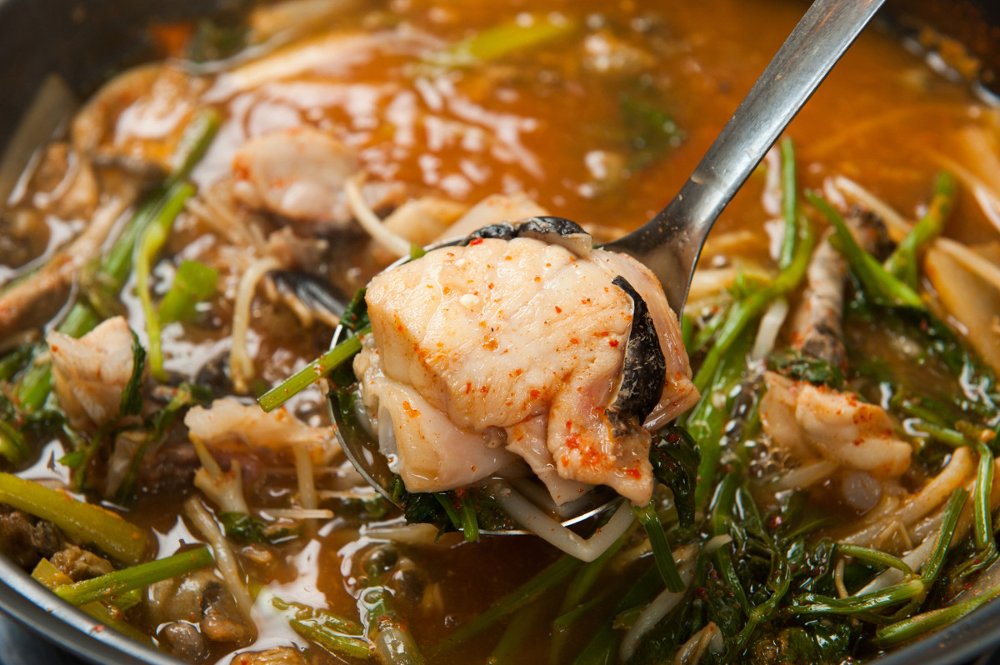

안녕하세요! 오늘은 2TV 생생정보 '장사의 신' 코너에서 소개된 서울 강남구 논현동의 아귀 전문 맛집 임자를 소개해드리려고 합니다.
선정릉역과 강남구청역 인근에 위치한 이 맛집의 시그니처 메뉴는 바로 "생아귀탕"입니다! 맑은탕·매운탕·들깨탕 세 가지 스타일로 즐길 수 있고, 신선한 생아귀를 사용해 귀한 아귀 간을 서비스로 제공하는 것으로도 유명합니다. 🐟
| 메뉴 | 특징 |
|---|---|
| 🥇 생아귀탕 (맑은탕) | 깔끔하고 시원한 맑은 국물로 즐기는 생아귀탕 |
| 생아귀탕 (매운탕) | 칼칼하게 끓여낸 매운 버전의 생아귀탕 |
| 생아귀탕 (들깨탕) | 고소한 들깨가 국물에 풍미를 더한 시그니처 생아귀탕 |
| ⭐ 아귀 간 (서비스) | 신선한 생아귀만의 특별한 별미 — 무료 서비스 제공 |
| 🥈 아귀찜 | 매콤달콤한 양념에 쫄깃한 아귀살과 콩나물의 조화 |
| 🥉 해물찜 | 다양한 신선 해산물이 가득한 푸짐한 해물찜 |
"국물이 정말 칼칼하면서도 들깨 덕분에 고소해요. 아귀살이 부드럽게 녹아서 숟가락이 멈추질 않습니다. 추운 겨울에 딱 좋은 보양식이에요!"
🚇 지하철: 선정릉역 또는 강남구청역 하차 후 도보 약 5~10분
🚌 버스: 논현동 방면 버스 이용
🅿️ 주차: 인근 공영주차장 이용
📍 서울 강남구 논현동 (선정릉역·강남구청역 인근)
※ 본 포스팅은 KBS 2TV 생생정보 방송 내용을 기반으로 작성되었습니다. 방문 전 영업시간과 메뉴를 확인해주세요.